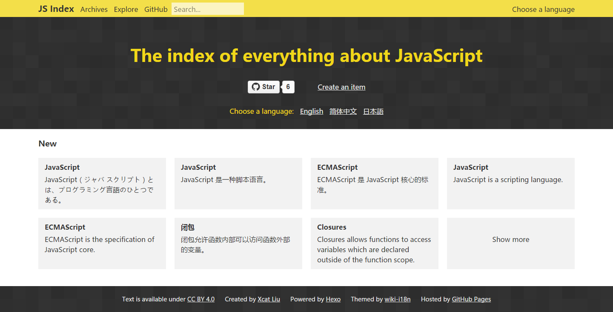

最近想尝试下用 Hexo 写 Wiki ，发现还挺酷的，所以把主题和一些插件提取出来了，分享给大家。
先上链接§
- 主题：wiki-i18n
- Demo ：JS Index
- Demo 的 Repo ：JS Index repo
- 插件，按字母顺序归档：hexo-generator-archive-alphabet
- 插件，按字母顺序归档（多语言版）：hexo-generator-archive-alphabet-i18n
- 插件，生成多语言的首页：hexo-generator-index-i18n
再上截图§
首页§

归档页§

内容页§

主题特性§
- 为 wiki 设计，已字母顺序归档，支持中文转拼音
- 相比传统 Wiki ，可以发挥 Git 的优势（目前还没发挥出来）
- 国际化（i18n）支持
其他§
- JS Index 现在还比较粗糙，准备每天积累一点。欢迎一起建设，具体可以看 JS Index repo 的介绍
- 不懂日语……添加日语只是为了多一个语言，好测试，所以谷歌翻译有问题的话，求指正
- 目前主题第一版的完成度大概是 60%，将来一个最主要的功能是自动识别每篇内容中的需要链到本站的 word ，并且自动添加超链接
- Explore 还没想好怎么设计，所以内容为空
欢迎提意见，欢迎一起建设！